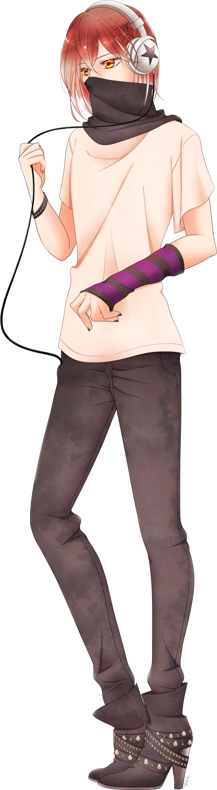
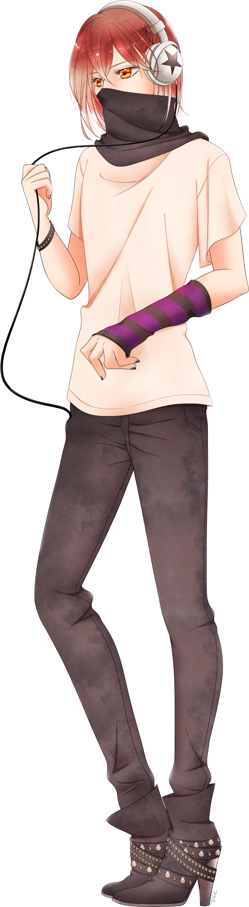

Kayre Quiroz
name: Kayre Quiroz
age: 20
date of birth: 6/18
hair color: Moderate red
hair style: short and straight, but cut slightly uneven with hair barrettes
skin tone: light tan
eye color: gold
height: 6 ft
ethnicity/race: Latino
citizenship: Sege Amant
key attribute: withdrawn
right-handed
body type: tall and slim, androgynous
Character Bio/Personality:
Unusual for a celebrity, Kayre is a introvert and more than a little socially awkward.
Even more unusual for a socially awkward person, Kayre is also brilliant at reading social cues and body language.
It's fortunate that Kayre's career as a fashion designer means little to no socializing with others.
Kayre is good friends with Daeon and through him has a deal with Day Enterprises for distribution of their work.